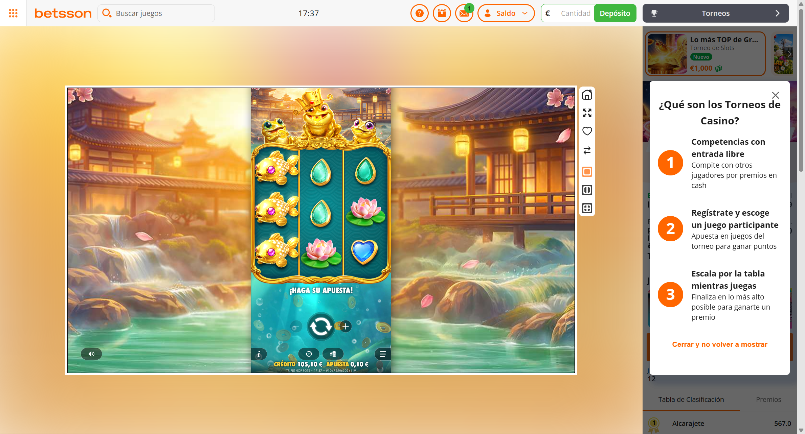

money.game- Esperado
- In-game balance: after = before − wager + payout
- Observado
- 105.20 − 0.10 + 0.00 = 105.10 EUR · read 104.10 EUR [read: "105,10 € (−1 € inyectado)"] · observed payout -1.00
Log del paso
15:37:44 · MISMATCH {"before":105.2,"bet":0.1,"payout":0,"after":104.1,"observedPayout":-1}
traza y detalles →